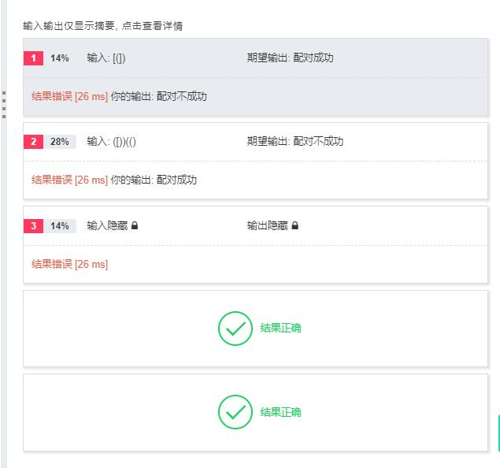
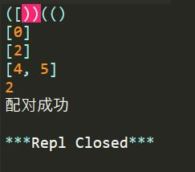
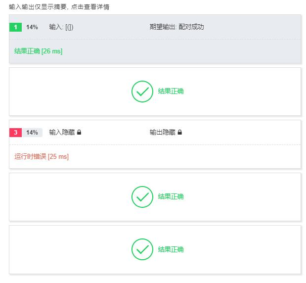

@
下面向大家介绍一下我在学习python课程的一些题目的解法，如果大家有什么更好的解法请私信我。这里只显示题目与代码。
描述：编写一个算法来确定一个数字是否“快乐”。 快乐的数字按照如下方式确定：从一个正整数开始，用其每位数的平方之和取代该数，并重复这个过程，直到最后数字要么收敛等于1且一直等于1，要么将无休止地循环下去且最终不会收敛等于1。能够最终收敛等于1的数就是快乐的数字。
例如: 19 就是一个快乐的数字，计算过程如下：
作者代码：用递归即可。
a = input('')
def num(a):
sum = 0
for i in list(a):
sum += int(i)**2
try:
if sum != 1:
num(str(sum))
else:
print('True')
except:
print('False')
result = num(a)描述：凯撒密码是古罗马凯撒大帝用来对军事情报进行加解密的算法，它采用了替换方法对信息中的每一个英文字符循环替换为字母表序列中该字符后面的第三个字符，即，字母表的对应关系如下：
原文：A B C D E F G H I J K L M N O P Q R S T U V W X Y Z
密文：D E F G H I J K L M N O P Q R S T U V W X Y Z A B C
对于原文字符P，其密文字符C满足如下条件：C=(P+3) mod 26
上述是凯撒密码的加密方法，解密方法反之，即：P=(C-3) mod 26
假设用户可能使用的输入仅包含小写字母a~z和空格，请编写一个程序，对输入字符串进行凯撒密码加密，直接输出结果，其中空格不用进行加密处理。使用input()获得输入。
作者代码：根据不同条件判断即可。
my_str = input("")
result = ""
for i in my_str:
if i != my_str[-1] and i not in ['x','y','z']:
result += chr(int(ord(i)) + 3 % 26)
elif i == my_str[-1]:
result += chr(int(ord(i)) + 3 % 26)
elif i in ['x','y','z']:
result += chr(int(ord(i)) - 23)
print(result.replace('#',' '))描述：恺撒密码是古罗马凯撒大帝用来对军事情报进行加解密的算法，它采用了替换方法对信息中的每一个英文字符循环替换为字母表序列中该字符后面的第三个字符，即，字母表的对应关系如下：
原文：A B C D E F G H I J K L M N O P Q R S T U V W X Y Z
密文：D E F G H I J K L M N O P Q R S T U V W X Y Z A B C
对于原文字符P，其密文字符C满足如下条件：C = (P+3) mod 26
上述是凯撒密码的加密方法，解密方法反之，即：P = (C-3) mod 26
假设用户可能使用的输入仅包含西文字母，即英文大小写字母a~zA~Z和特殊字符，请编写一个程序，对输入字符串进行凯撒密码加密，直接输出结果，其中特殊字符不进行加密处理。
作者代码：根据是否在ASCII码范围内判断即可。
my_str = input("")
result = ""
for i in my_str:
if i != my_str[-1] and i not in ['x','y','z','X','Y','Z'] and (65 <= int(ord(i)) <= 90 or 97 <= int(ord(i)) <= 122):
result += chr(int(ord(i)) + 3 % 26)
elif i == my_str[-1] and (65 <= int(ord(i)) <= 90 or 97 <= int(ord(i)) <= 122):
result += chr(int(ord(i)) + 3 % 26)
elif i in ['x','y','z','X','Y','Z']:
result += chr(int(ord(i)) - 23)
else:
result += i
print(result.replace('#',' '))描述：用户输入一行字符串，其中可能包括小括号 ()，请检查小括号是否配对正确，配对成功与否分别输出：
配对成功，配对不成功
其中，小括号配对要考虑配对顺序，即()表示配对，)(不是配对，只考虑小括号配对。
注意，这是一个OJ题目，获得输入使用input("")。
作者代码：C语言中可以用栈，这里可以不用，用更简单的方法
# 把每一个的右括号的值的位置放进去
def everyRight(right,a):
# 找到该右括号左边的最近左括号的序列号
for j in a:
if j - right < 0:
m = j
return m
my_str = input("")
my_list = list(my_str)
a = [];b = []
for i in range(0,len(my_list)):
if '(' == my_list[i]:
a.append(i)
elif ')' == my_list[i]:
b.append(i)
s1 = [];s2 = []
i = 0
try:
while 1:
# 递归，首先，先找到第一个右括号和第一个左括号，找到后，就去除，然后递归
left = everyRight(b[i],a)
right = b[i]
s1.append(left)
s2.append(right)
# 删除上一次左括号对应的序号，并将下一次的右括号和左括号调用函数
a.pop(left)
everyRight(b[i+1],a)
i = i+1
except:
pass
try:
if len(s1) == len(s2) and len(s1) !=0 and len(a) != 1:
print('配对成功')
else:
print('配对不成功')
except:
print('配对不成功')
但是这种方法有问题，比如遇到下面的输出：

为什么会出现这种情况呢？我们看下如下输出：

这时候就是一种错误就是当遇到了右括号还没有遇到左括号就会停下，我们把列表删去我们除去的值，当到了最后停止时，再根据左右括号个数判断。
代码如下：
# 把每一个的右括号的值的位置放进去
def everyRight(right,a):
# 找到该右括号左边的最近左括号的序列号
for j in a:
if j - right < 0:
m = j
return m
my_str = input("")
my_list = list(my_str)
a = [];b = []
for i in range(0,len(my_list)):
if '(' == my_list[i]:
a.append(i)
elif ')' == my_list[i]:
b.append(i)
s1 = [];s2 = []
i = 0
try:
while 1:
# 递归，首先，先找到第一个右括号和第一个左括号，找到后，就去除，然后递归
left = everyRight(b[i],a)
right = b[i]
s1.append(left)
s2.append(right)
print('right{0}'.format(right))
# 删除上一次左括号对应的序号，并将下一次的右括号和左括号调用函数
a.pop(left)
# 删除列表对应的值
my_list.remove(my_list[left])
my_list.remove(my_list[right])
everyRight(b[i+1],a)
i = i+1
except:
pass
# print(s1)
# print(s2)
# print(a)
# print(len(a))
# print(my_list)
a1 = my_list.index(')')
a2 = my_list.index('(')
try:
if len(s1) == len(s2) and len(s1) !=0 and a2 < a1:
print('配对成功')
else:
print('配对不成功')
except:
print('配对不成功') 但是还是有错误：

但是我们已经接近正确答案了，改进后的完整代码我会下一篇博客讲解。